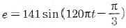
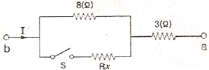
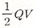
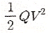
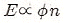
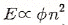
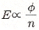
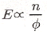
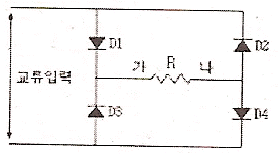
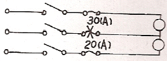

전기기능사 (2011-10-09 기출문제)
1과목: 전기 이론
1. 전기력선의 성질을 설명한 것으로 옳지 않은 것은?
- 전기력선의 방향은 전기장의 방향과 같으며, 전기력선의 밀도는 전기장의 크기와 같다.
- 전기력선은 도체 내부에 존재한다.
- 전기력선은 등전위면에 수직으로 출입한다.
- 전기력선은 양전하에서 음전하로 이동한다.
(정답률: 69%)

2.

인 파형의 주파수는 몇 [Hz]인가- 10
- 15
- 30
- 60
(정답률: 75%)
3. 표면 전하밀도 σ[C/m2]로 대전된 도체 내부의 전속밀도는 몇 [C/m2]인가?
- ε0
- 0
- σ
- E/ε0
(정답률: 61%)
4. 자극의 세기 4[Wb], 자축의 길이 10[㎝]의 막대자석이 100[AT/m]의 평등자장 내에서 20[Nㆍm]의 회전력을 받았다면 이때 막대자석과 자장과의 이루는 각도는?
- 0°
- 30°
- 60°
- 90°
(정답률: 45%)
5. 그림과 같은 회로에서 a, b간에 E[V]의 전압을 가하여 일정하게 하고, 스위치 S를 닫았을 때의 전전류 I[A]가 닫기전 전류의 3배가 되었다면 저항 Rx의 값은 약 몇[Ω]인가?

- 727Ω
- 27Ω
- 0.73Ω
- 0.27Ω
(정답률: 74%)
6. 대칭 3상 △ 결선에서 선전류와 상전류와의 위상 관계는?
- 상전류가 π/6[rad] 앞선다.
- 상전류가 π/6[rad] 뒤진다.
- 상전류가 π/3[rad] 앞선다.
- 상전류가 π/3[rad] 뒤진다.
(정답률: 51%)
7. 전류와 자속에 관한 설명 중 옳은 것은?
- 전류와 자속은 항상 폐회로를 이룬다.
- 전류와 자속은 항상 폐회로를 이루지 않는다.
- 전류는 폐회로이나 자속은 아니다.
- 자속은 폐회로이나 전류는 아니다.
(정답률: 58%)
8. 1[AH]는 몇 [C] 인가?
- 7200
- 3600
- 1200
- 60
(정답률: 88%)
9. R = 10[Ω], XL = 15[Ω], Xc = 15[Ω]의 직렬회로에 100V의 교류전압을 인가할 때 흐르는 전류 [A]는?
- 6
- 8
- 10
- 12
(정답률: 72%)
10. 전장 중에 단위정전하를 놓을 때 여기에 작용하는 힘과 같은 것은?
- 전하
- 전장의 세기
- 전위
- 전속
(정답률: 77%)
11. 전압계 및 전류계의측정 범위를 넓히기 위하여 사용하는 배율기와 분류기의 접속 방법은?
- 배율기는 전압계와 병렬 접속, 분류기는 전류계와 직렬 접속
- 배율기는 전압계와 직렬접속, 분류기는 전류계와 병렬접속
- 배율기 및 분류기 모두 전압계와 전류계에 직렬접속
- 배율기 및 분류기 모두 전압계와 전류계에 병렬접속
(정답률: 61%)
12. 다음 설명의 ( (ㄱ) ),( (ㄴ) )에 들어갈 내용으로 옳은 것은?("히스테리시스 곡선에서 종축과 만나는 점은 ( (ㄱ) )이고, 횡축과 만나는 점은 ( (ㄴ) )이다.")
- (ㄱ) 보자력, (ㄴ) 잔류자기
- (ㄱ) 잔류자기, (ㄴ) 보자력
- (ㄱ) 자속밀도, (ㄴ) 자기저항
- (ㄱ) 자기저항, (ㄴ) 자속밀도
(정답률: 68%)
13. 자기 인덕턴스가 0.01H 인 코일에 100V, 60Hz의 사인파 전압을 가할 때 유도 리액턴스는 약 몇 [Ω]인가?
- 3.77
- 6.28
- 12.28
- 37.68
(정답률: 40%)
14. 황산구리(CuSO4)의 전해액에 2개의 동일한 구리판을 넣고 전원을 연결하였을 때 구리판의 변화를 옳게 설명한 것은?
- 2개의 구리판 모두 얇아진다.
- 2개의 구리판모두 두터워진다.
- 양극 쪽은 얇아지고, 음극 쪽은 두터워진다.
- 양극 쪽은 두터워지고, 음극 쪽은 얇아진다.
(정답률: 63%)
15. 비사인파 교류의 일반적인 구성이 아닌 것은?
- 기본파
- 직류분
- 고조파
- 삼각파
(정답률: 76%)
16. 2전력계법으로 3상 전력을 측정하였더니 전력계의 지시값이 P1= 450[W], P2=450[W]이였다. 이부하의 전력 [W]은 얼마인가?
- 450W
- 900W
- 1350W
- 1560W
(정답률: 85%)
17. 콘덴서에 V[V]의 전압을 가해서 Q[C]의 전하를 충전할때 저장되는 에너지는 몇 [J]인가?
- 2QV
- 2QV2


(정답률: 63%)
18. 1Ω, 2Ω, 3Ω의 저항 3개를 이용하여 합성 저항을 2.2Ω으로 만들고자 할 때 접속 방법을 옳게 설명한 것은?
- 저항 3개를 직렬로 접속한다.
- 저항 3개를 병렬로 접속한다.
- 2Ω 과 3Ω 의 저항을 병렬로 연결한 다음 1Ω의 저항을 직렬로 접속을 한다.
- 1Ω 과 2Ω의 저항을 병렬로 연결한 다음 3Ω의 저항을 직렬로 접속을 한다.
(정답률: 79%)
19. 1.5kW의 전열기를 정격 상태에서 30분간 사용할 때의 발열량은 몇 [kcal] 인가?
- 648
- 1290
- 1500
- 2700
(정답률: 52%)
20. 공기중에 1[Wb]의 자극에서 나오는 자력선의 수는 몇 개인가?
- 6.33 × 104
- 7.958 × 105
- 8.855 × 103
- 1.256 × 106
(정답률: 9%)
2과목: 전기 기기
21. 동기발전기의 전기자 반작용에 대한 설명으로 틀린 사항은?
- 전기자 반작용의 부하 역률에 따라 크게 변화된다.
- 전지자 전류에 의한 자속의 영향으로 감자 및 자화현상과 편자현상이 발생된다.
- 전기자 반작용의 결과 감자현상이 발생될 때 반작용 리액턴스의 값은 감소된다.
- 계자 자극의 중심축과 전기자전류에 의한 자속이 전기적으로 90°를 이룰 때 편자현상이 발생된다.
(정답률: 40%)
22. 직류 전동기의 속도 제어법 중 전압제어법으로서 제철소의 압연기, 고속 엘리베이터의 제어에 사용되는 방법은?
- 워드 레오나드 방식
- 정지 레오나드 방식
- 일그너 방식
- 크래머 방식
(정답률: 62%)
23. 변압기 절연내력 시험과 관계 없는 것은?
- 가압시험
- 유도시험
- 충격시험
- 극성시험
(정답률: 55%)
24. 직류를 교류로 변환하는 장치는?
- 컨버터
- 초퍼
- 인버터
- 정류기
(정답률: 78%)
25. 변압기의 임피던스 전압이란?
- 정격전류가 흐를 때 변압기내의 전압강하
- 여자전류가 흐를 때 2차측 단자전압
- 정격전류가 흐를 때 2차측 단자전압
- 2차 단락전류가 흐를 때 변압기내의 전압강하
(정답률: 44%)
26. 4극 고정자홈 수 36의 3상 유도전동기의 홈 간격은 전기각의 몇 도인가?
- 5°
- 10°
- 15°
- 20°
(정답률: 27%)
27. 동기전동기의 여자 전류를 변화시켜도 변하지 않는 것은?(단 공급전압과 부하는 일정하다)
- 역률
- 역기전력
- 속도
- 전기자 전류
(정답률: 45%)
28. 절연물을 전극사이에 삽입하고 전압을 가하면 전류가 흐르는데 이 전류는?
- 과전류
- 접촉전류
- 단락전류
- 누설전류
(정답률: 62%)
29. 직류 직권전동기의 벨트 운전을 금지하는 이유는?
- 벨트가 벗겨지면 위험속도에 도달한다.
- 손실이 많아진다.
- 벨트가 마모하여 보수가 곤란하다.
- 직결하지 않으면 속도제어가 곤란하다.
(정답률: 79%)
30. 직류 발전기에서 유기기전력 E를 바르게 나타낸 것은?(단, 자속은 ø, 회전속도는 n이다)




(정답률: 46%)
31. 동기 발전기를 계통에 접속하여 병렬운전 할 때 관계없는 것은?
- 전류
- 전압
- 위상
- 주파수
(정답률: 46%)
32. 단상 유도 전동기 중 ㄱ:반발 기동형, ㄴ:콘덴서 기동형, ㄷ:분상 기동형, ㄹ:셰이딩 코일형 이 있을때, 기동 토크가 큰 것부터 옳게 나열한 것은?
- (ㄱ) > (ㄴ) > (ㄷ) > (ㄹ)
- (ㄱ) > (ㄹ) > (ㄴ) > (ㄷ)
- (ㄱ) > (ㄷ) > (ㄹ) > (ㄴ)
- (ㄱ) > (ㄴ) > (ㄹ) > (ㄷ)
(정답률: 81%)
33. 정격 속도에 비하여 기동 회전력이 가장 큰 전동기는?
- 타여자기
- 직권기
- 분권기
- 복권기
(정답률: 55%)
34. 보호 계전기 시험을 하기 위한 유의 사항이 아닌 것은?
- 시섬회로 결선시 교류와 직류 확인
- 영점의 정확성 확인
- 계전기 시험 장비의 오차 확인
- 시험 회로 결선시 교류의 극성 확인
(정답률: 63%)
35. 단상 반파 정류 회로의 전원전압 200V, 부하저항 10Ω 이면 부하 전류는 약 몇 [A] 인가?
- 4
- 9
- 13
- 18
(정답률: 56%)
36. 12극과 8극인 2개의 유도전동기를 종속법에 의한 직렬 종속법으로 속도 제어할 때 전원 주파수가 50Hz 인 경우 무부하 속도 N은 몇 [rps]인가?
- 5
- 50
- 300
- 3000
(정답률: 23%)
37. 3상 유도전동기의 최고 속도는 우리나라에서 몇[rpm] 인가?
- 3600
- 3000
- 1800
- 1500
(정답률: 74%)
38. 변압기 내부 고장 보호에 쓰이는 계전기는?
- 접지 계전기
- 차동 계전기
- 과전압 계전기
- 역상 계전기
(정답률: 69%)
39. 동기 전동기의 자기 기동에서 계자권선을 단락하는 이유는?
- 기동이 쉽다.
- 기동권선으로 이용
- 고전압 유도에 의한 절연파괴 위험 방지
- 전자기 반작용을 방지한다.
(정답률: 61%)
40. 그림과 같은 회로에서 사인파 교류입력 12V(실효값)를 가했을 때, 저항 R 양단에 나타나는 전압 [V] 은?

- 5.4V
- 6V
- 10.8V
- 12V
(정답률: 43%)
3과목: 전기 설비
41. 엘리베이터장치를 시설할 때 승강기 내부에서 사용하는 전등 및 전기기계기구에 사용할 수 있는 최대전압은?
- 110[V] 미만
- 220[V] 미만
- 400[V] 미만
- 440[V] 미만
(정답률: 66%)
42. 애자사용 공사에서 전선의 지점간 거리는 전선을 조영재의 위면 또는 옆면에 따라 붙이는 경우에는 몇 [m] 이하 인가?
- 1
- 1.5
- 2
- 3
(정답률: 59%)
43. 가요 전선관의 상호접속은 무엇을 사용하는가?
- 컴비네이션 커플링
- 스플릿 커플링
- 더블 커넥터
- 앵글 커넥터
(정답률: 62%)
44. 전주의 길이가 15[m] 이하인 경우 땅에 묻히는 깊이는 전주 길이의 얼마 이상으로 하여야 하는가?
- 1/2
- 1/3
- 1/5
- 1/6
(정답률: 67%)
45. 배전선로 기기설치 공사에서 전주에 승주 및 발판 못 볼트는 지상 몇 [m] 지점에서 180° 방향에서 몇 [m] 씩 양쪽으로 설치하여야 하는가?
- 1.5[m], 0.3[m]
- 1.5[m], 0.45[m]
- 1.8[m], 0.3[m]
- 1.8[m], 0.45[m]
(정답률: 44%)
46. 버스덕트 공사에서 덕트를 조영재에 붙이는 경우에는 덕트의 지지점간의 거리를 몇[m] 이하로 하여야 하는가?
- 3
- 4.5
- 6
- 9
(정답률: 60%)
47. 사용전압이 400[V] 미만인 경우의 금속관 및 그 부속품등은 몇 종 접지공사를 하여야 하는가?(관련 규정 개정전 문제로 여기서는 기존 정답인 3번을 누르면 정답 처리됩니다. 자세한 내용은 해설을 참고하세요.)
- 제1종 접지공사
- 제2종 접지공사
- 제3종 접지공사
- 특별 제3종 접지공사
(정답률: 76%)
48. 도면과 같은 단상 3선식의 옥외 배선에서 중선선과 양외선간에 각각 20[A], 30[A]의 전등 부하가 걸렸을 때 인입 개폐기의 X점에서 단자가 빠졌을 경우 발생하는 현상은?

- 별 이상이 일어나지 않는다.
- 20[A] 부하의 단자전압이 상승
- 30[A] 부하의 단자전압이 상승
- 양쪽 부하에 전류가 흐르지 않는다.
(정답률: 56%)
49. 경질 비닐 전선관의 설명으로 틀린 것은?
- 1본의 길이는 3.6[m]가 표준이다.
- 굵기는 관 안지름의 크기에 가까운 짝수 [mm]로 나타낸다.
- 금속관에 비해 절연성이 우수하다.
- 금속관에 비해 내식성이 우수하다.
(정답률: 50%)
50. 옥내의 저압전로와 대지 사이의 절연저항 측정에 알맞은 계기는?
- 회로 시험기
- 접지 측정기
- 네온 검전기
- 메거 측정기
(정답률: 63%)
51. 지중 또는 수중에 시설하는 양극과 피방식체간의 전기부식방지 시설에 대한 설명으로 틀린 것은?
- 사용 전압은 직류 60[V] 초과 일 것
- 지중에 매설하는 양극은 75[㎝] 이상의 깊이일 것
- 수중에 시설하는 양극과 그 주위 1[m] 안의 임의의 점과의 전위차는 10[V]를 넘지 않을 것
- 지표에서 1[m] 간격의 임의의 2점간의 전위차가 5[V]를 넘지 않을 것
(정답률: 49%)
52. 수변전 설비에서 차단기의 종류 중 가스 차단기에 들어가는 가스의 종류는?
- CO2
- LPG
- SF6
- LNG
(정답률: 70%)
53. 폭연성 분진이 존재하는 곳의 금속관 공사에 있어서 관 상호 간 및 관과 박스의 접속은 몇 턱 이상의 나사 조임으로 시공하여야 하는가?
- 3턱
- 5턱
- 7턱
- 9턱
(정답률: 79%)
54. 연접인입선 시설 제한규정에 대한 설명으로 잘못 된 것은?
- 분기하는 점에서 100m를 넘지 않아야 한다.
- 폭 5m를 넘는 도로를 횡단하지 않아야 한다.
- 옥내를 통과해서는 안 된다.
- 분기하는 점에서 고압의 경우에는 200m를 넘지 않아야 한다.
(정답률: 65%)
55. 단면적 6mm2 이하의 가는 단선(동전선)의 트위스트조인트에 해당되는 전선접속법은?(오류 신고가 접수된 문제입니다. 반드시 정답과 해설을 확인하시기 바랍니다.)
- 직선접속
- 분기접속
- 슬리브접속
- 종단접속
(정답률: 41%)
56. 배전반 및 분전반을 넣은 강판제로 만든 함의 최소 두께는?
- 1.2[㎜] 이상
- 1.5[㎜] 이상
- 2.0[㎜] 이상
- 2.5[㎜] 이상
(정답률: 49%)
57. 지중에 매설되어있는 금속제 수도관로를 접지공사의 접지극으로 사용할 수 있다. 이때 수도관로는 대지와의 전기 저항치가 얼마 이하여야 하는가?
- 1[Ω]
- 2[Ω]
- 3[Ω]
- 4[Ω]
(정답률: 60%)
58. 각 수용가의 최대 수용전력이 각각 5[kW], 10[kW], 15[kW], 22[kW]이고, 합성 최대 수용전력이 50[kW]이다. 수용가 상호간의 부등률은 얼마인가?
- 1.04
- 2.34
- 4.25
- 6.94
(정답률: 44%)
59. 정격전류 30[A] 이하의 A종 퓨즈는 전격전류 200[%]에서 몇 분 이내 용단되어야 하는가?
- 2분
- 4분
- 6분
- 8분
(정답률: 56%)
60. 캡타이어 케이블을 조영재에 시설하는 경우 그 지지점간의 거리는 얼마로 하여야 하는가?(오류 신고가 접수된 문제입니다. 반드시 정답과 해설을 확인하시기 바랍니다.)
- 1[m]이하
- 1.5[m]이하
- 2.0[m]이하
- 2.5[m]이하
(정답률: 47%)